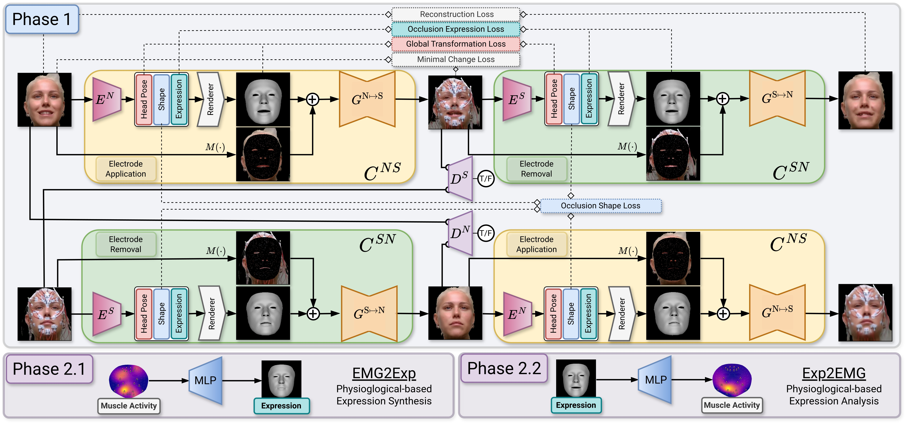

EIFER (Electromyography-Informed Facial Expression Reconstruction) introduces a novel approach for facial expression analysis that addresses the challenges posed by surface electromyography (sEMG) electrode occlusion.
Our method is grounded in the principle of decoupling facial geometry and appearance, achieved through a neural unpaired image-to-image translation framework, see the above figure.
EIFER leverages 3D Morphable Models (3DMMs), specifically FLAME , to provide a parametric representation of facial shape and expression.
We see the 3DMM expression space and muscle activity as the missing link between computer animation and physiologically-grounded facial expression analysis.
For monocular 3D face reconstruction, EIFER employs neural differential rendering and utilizes pre-trained SMIRK encoder networks.
These encoders, consisting of sub-encoders based on MobileNetV3 backbones, estimate 3DMM parameters (shape, expression, pose) from the sEMG electrode occluded input facial images.
The core of EIFER's occlusion handling lies in a CycleGAN-like adversarial architecture for unpaired image-to-image translation.
This architecture comprises generator and discriminator networks trained adversarially using unpaired sets of sEMG-occluded and occlusion-free (reference) facial images.
Crucially, EIFER learns a bidirectional mapping between the 3DMM expression parameter space and measured sEMG muscle activity through multi-layer perceptron (MLPs).
This bidirectional mapping enables both the synthesis of facial expressions from muscle activity and the prediction of muscle activity from observed facial expressions, effectively achieving electrode-free facial electromyography.
Key Advantages of EIFER:
-
Reconstructs Facial Expressions Under Occlusion:
EIFER uniquely addresses the challenge of sensor occlusion, accurately reconstructing facial expressions even when electrodes or other visual obstructions are present.
-
Combines Video and Muscle Activity Data:
By leveraging both video and muscle activity (sEMG) data, EIFER provides a more comprehensive and physiologically grounded fully data-driven understanding of facial expressions.
-
Enables Electrode-Free Facial Electromyography:
EIFER can predict muscle activity from facial expressions alone, paving the way for non-invasive, electrode-free facial electromyography in the future.
-
Provides Accurate 3D Facial Geometry and Appearance:
EIFER not only reconstructs a visually realistic face but also captures the underlying 3D geometry, providing richer data for analysis and synthesis.
-
Utilizes Advanced AI Techniques:
Built upon state-of-the-art 3D Morphable Models and unpaired image-to-image translation, EIFER represents a significant advancement in facial analysis technology.
-
Opens Doors for Multi-Modal Facial Analysis:
EIFER facilitates the integration of various data streams for a more holistic understanding of facial expressions, with potential applications in medicine, psychology, human-computer interaction, and animation.